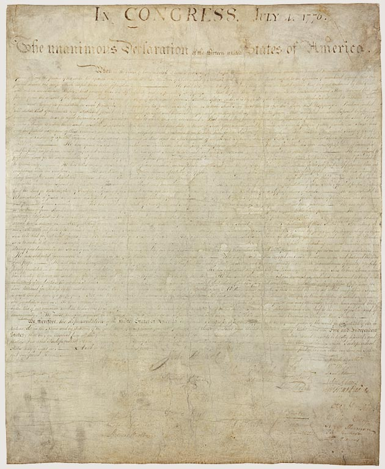

American History · Chapter lesson
Independence and its unfinished promise
Read a short illustrated account, examine primary sources, and discuss the evidence.
1763–1783
Independence and its unfinished promise
After 1763, disputes over British taxation and colonial representation grew. Fighting began at Lexington and Concord in 1775. On July 4, 1776, the Continental Congress adopted the Declaration of Independence, explaining why thirteen colonies claimed independence from Britain. The Revolutionary War ended in 1783. The Declaration’s language of equality became a powerful argument for later reform, even as slavery continued and women and Native peoples were excluded from equal political power.
Discuss: How can a founding ideal become a tool for changing society?
National Archives: Declaration →